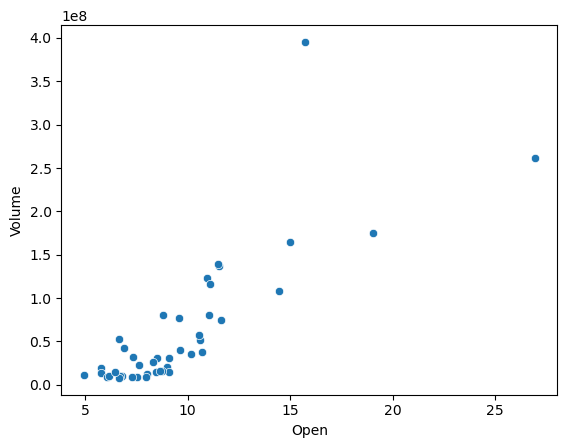

Python is a versatile and widely-used programming language in the field of data science due to its readability and the extensive ecosystem of data-centric libraries. For this project, the following libraries would be employed:
Pandas: This library is fundamental for data manipulation and analysis. It provides data structures and operations for manipulating numerical tables and time series. It is particularly well-suited for handling structured data, like the stock and text datasets we are dealing with.
NumPy: Often used in conjunction with Pandas, NumPy adds support for large, multi-dimensional arrays and matrices, along with a collection of mathematical functions to operate on these arrays. It’s essential for numerical computations.
Matplotlib: This plotting library offers a MATLAB-like interface and is excellent for creating static, interactive, and animated visualizations in Python. It’s highly customizable and can be used to make the histograms and scatter plots that are often required in EDA.
Seaborn: Built on top of Matplotlib, Seaborn is a statistical graphics library that provides a high-level interface for drawing attractive and informative statistical graphics. It’s particularly good for creating more complex charts like heatmaps for correlation analysis with less code.
Scikit-learn: Although primarily known for its machine learning algorithms, scikit-learn also includes various tools for data preprocessing, model selection, and evaluation metrics that are vital for the classification tasks we are undertaking.
Natural Language Toolkit (NLTK): For text data, NLTK is a powerful Python library that provides tools for working with human language data (text). It’s useful for tasks such as sentiment analysis, tokenization, and stopwords removal.
VADER (from NLTK): A lexicon and rule-based sentiment analysis tool specifically attuned to sentiments expressed in social media. It’s beneficial for labeling our text data based on sentiment.
WordCloud: While not as analytical as other tools, WordCloud can be used to visualize the most prominent words in the text data, which might give insights into the overall sentiment or topics of discussion.
Jupyter Notebook or JupyterLab: For an interactive computing environment where we can combine code execution, rich text, visualizations, and other media, Jupyter Notebook or JupyterLab will be used. It’s particularly helpful for sharing the analysis process in a readable format that includes both code and commentary.
Quick look at the data
# Import seabornimport pandas as pdimport matplotlib.pyplot as pltdf1 = pd.read_csv('../data/bbbyopen.csv', index_col='Date', parse_dates=True)# Basic statisticsprint("Basic Statistical Details:")print(df1.describe())
Basic Statistical Details:
Open High Low Close Adj Close Volume
count 43.000000 43.000000 43.000000 43.000000 43.000000 4.300000e+01
mean 9.613721 10.715116 8.859302 9.659070 9.659070 6.085124e+07
std 3.960792 5.189946 3.215582 3.811286 3.811286 7.683056e+07
min 4.940000 5.770000 4.860000 5.770000 5.770000 7.908500e+06
25% 7.095000 7.735000 6.800000 7.180000 7.180000 1.401785e+07
50% 8.740000 9.120000 8.350000 8.760000 8.760000 3.142170e+07
75% 10.800000 11.740000 9.895000 10.570000 10.570000 7.872405e+07
max 26.940001 30.000000 22.500000 23.080000 23.080000 3.953199e+08
Correlation matrix
# Compute the correlation matrixcorr_matrix = df.corr()
import seaborn as snsimport matplotlib.pyplot as plt# Set up the matplotlib figuref, ax = plt.subplots(figsize=(11, 9))# Generate a heatmapsns.heatmap(corr_matrix, annot=True, fmt=".2f", cmap='coolwarm', ax=ax)# Show the plotplt.show()
# Scatter plot of two variables with strong correlationsns.scatterplot(data=df, x='Open', y='Volume')plt.show()

Line plot for closing prices
plt.figure(figsize=(14, 7))plt.plot(df['Close'], label='Close Price')plt.title('Closing Price Over Time')plt.xlabel('Date')plt.ylabel('Closing Price')plt.legend()plt.show()
Time Series analysis of Stock Data
import pandas as pdimport matplotlib.pyplot as pltdf1 = pd.read_csv('../data/bbbyopen.csv')print(df1.columns)# Parse the 'Date' column to datetime while considering the timezone (-04:00)df1['Date'] = pd.to_datetime(df1['Date'], utc=True)df1.set_index('Date', inplace=True)# Convert the index to the desired timezone (the data has -04:00 which corresponds to US Eastern time)df1.index = df1.index.tz_convert('US/Eastern')# Plotting 'Close' priceplt.figure(figsize=(14, 7))plt.plot(df1.index, df1['Close'], label='Close Price', marker='o')# Adding titles and labelsplt.title('Stock Close Price Time Series')plt.xlabel('Date')plt.ylabel('Close Price in $')plt.legend()# Improving designplt.grid(True)plt.tight_layout()# Rotate date labelsplt.xticks(rotation=45)# Show the plotplt.show()
plt.figure(figsize=(14, 7))plt.bar(df.index, df['Volume'], label='Volume Traded')plt.title('Volume Traded Over Time')plt.xlabel('Date')plt.ylabel('Volume')plt.legend()plt.show()
Box Plot for closing prices to show distribution and potential outliers
# Box plot for closing prices to show distribution and potential outliersplt.figure(figsize=(7, 5))plt.boxplot(df['Close'], vert=False)plt.title('Box Plot of Closing Prices')plt.xlabel('Price')plt.show()
After doing the EDA step for stock data, we can conclude the following.
Date Range:
The data ranges from August 1, 2022, to September 29, 2022, giving us nearly two months of trading data to analyze.
Price Movement:
Opening Prices:
The opening prices have fluctuated significantly. The stock opened at $4.94 on August 1 and reached a high opening of $26.94 on August 17, indicating a substantial price increase within the month.
Closing Prices:
Closing prices saw similar volatility, starting at $5.77 and spiking up to $23.08 by August 17 before dropping down to $6.19 by the end of the period.
Highs and Lows:
The stock experienced considerable intraday volatility. For instance, on August 16, the stock reached a high of $28.60 but also had a low of $15.36 within the same day.
Volume:
Trading volume varied widely, with particularly high volumes coinciding with large price movements. For example, on August 8 and 16, where the closing prices were $11.41 and $20.65, the volumes were 122,664,300 and 395,319,900 respectively, which are significantly higher than the rest of the dates.
Hypothesis Generation
For Stock Data:
Price and Volume Relationship: “On days with significant stock price changes, there is higher trading volume.”
Time Series Momentum: “Stock prices exhibit momentum, meaning that increases or decreases in price tend to be followed by further increases or decreases.”
Impact of Earnings Announcements: “Stock prices tend to experience greater volatility on the days of earnings announcements.”
Market Reaction to Sentiment: “Positive sentiment in the text data correlates with stock price increases in subsequent trading sessions.”
For Text Data:
Sentiment Impact on Price: “Days with predominantly positive sentiment in the text data will be associated with an increase in stock prices.”
Predictive Power of Social Media: “Social media sentiment on a particular stock is predictive of the trading volume for the next day.”
Correlation of Sentiment Across Platforms: “Sentiment regarding a stock on social media platforms is strongly correlated with sentiment in news articles.”
Combined Hypotheses:
Lead-Lag Relationship: “Sentiment indicators derived from text data lead stock market reactions by one trading day.”
Sentiment Intensity and Market Reaction: “Higher intensity of sentiment (both positive and negative) in text data is associated with larger price movements in the stock.”
Earnings Sentiment: “Sentiment expressed in social media posts around the time of earnings reports is indicative of the direction of the stock’s price movement post-announcement.”
WordCloud for the data
from wordcloud import WordCloudimport matplotlib.pyplot as pltdf = pd.read_csv('https://raw.githubusercontent.com/dheerajoruganty/RedditSentimentAnalysisWSB/main/title.csv')text =" ".join(review for review in df.title)# Generating a word cloud imagewordcloud = WordCloud(background_color="white").generate(text)# Display the generated image using matplotlibplt.figure(figsize=(10,5))plt.imshow(wordcloud, interpolation='bilinear')plt.axis("off")plt.show()
Findings
Key Terms
Stock Focus: “GME” and “BBBY” are the most prominent terms, indicating a high volume of discussion centered around GameStop and Bed Bath & Beyond stocks.
Trading Vocabulary: Common trading terms such as “buy,” “sell,” “share,” and “stock” are prevalent.
Investor Behavior and Sentiment
Community Lingo: Words like “moon,” “YOLO,” “ape,” and “HODL” suggest a community-driven, speculative approach to trading, aiming for substantial short-term gains.
Market Tactics: Discussions are rich with strategic terms like “short,” “squeeze,” “bullish,” and “put,” showing a deep engagement with market maneuvering.
Temporal Focus
Immediate Action: The prominence of “today,” “tomorrow,” and “now” highlights a focus on immediate trading decisions rather than long-term investment strategies.
Emotional and Personal Investment
Risk and Strategy: The term “YOLO” alongside “holding” illustrates a blend of risk-taking and strategic retention in investment decisions.
Influential Figures
Notable Personalities: The mention of “Ryan Cohen” points to discussions that likely reflect the impact of key individuals in the trading community.
Discussion
The word cloud illustrates that the discussions are not just about trading strategies but also about community dynamics, with a marked tendency towards speculative trading. This is emblematic of a shift in investment culture, where individual investors collectively and informally share insights, strategies, and reactions to market events on digital platforms. The analysis provides a snapshot of the zeitgeist of modern retail investing, characterized by immediacy, community identity, and the influence of social media on market movements.
Conclusion
In conclusion, the word cloud analysis of the text data from trading discussions has unveiled a vivid picture of the previous trading landscapes. It highlights the interplay between collective sentiment and individual decision-making, where community vernacular and strategic discourse converge. This underscores the impact of social platforms on investment practices and the evolving nature of the stock market in the digital age.